В текстовом файле собраны 7 ключевых запросов, которые отправлялись через PuTTY (raw-соединение на порт 80). Это план лабораторной: GET / HTTP/1.0, GET /bmw/index.php HTTP/1.1, HEAD /bmw/file.tar.gz, HEAD /bmw/image.png, POST /bmw/index.php с телом comment=Hello, GET /bmw/file.tar.gz с заголовком Range: bytes=0-99 и финальный HEAD /bmw/index.php для кодировки.
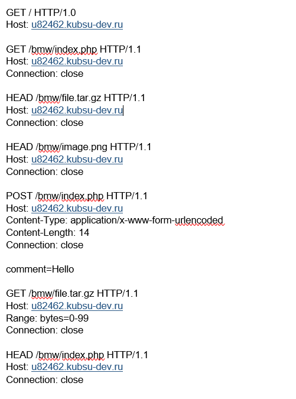
Команды: git clone https://github.com/abbasovaaisha/web2.git → затем mkdir -p ~/www/bmw → cp -r ~/web2/* ~/www/bmw/. Все файлы проекта (index.php, изображения, архивы) скопированы в доменную директорию. Это обязательный этап для размещения лабораторной на сервере.
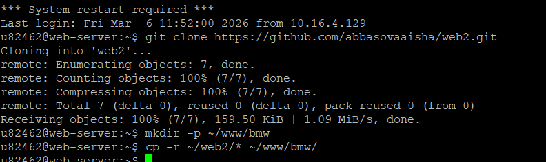
Для отправки HTTP-запросов использовался PuTTY в режиме Raw (порт 80). Хост: u82462.kubsu-dev.ru. Сохранена сессия с именем bmw, чтобы быстро подключаться и вставлять запросы из буфера обмена.
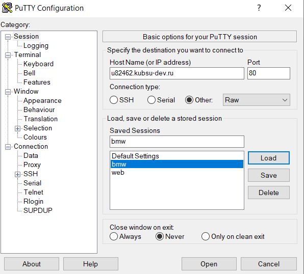
Запрос: GET / HTTP/1.0
Host: u82462.kubsu-dev.ru
Ответ сервера: HTTP/1.1 200 OK, заголовки Server: Apache/2.4.58, Content-Length: 335. В теле — "PHP is working!" и ошибка PDO (попытка подключения к БД). Это подтверждает, что главная страница обрабатывается PHP.
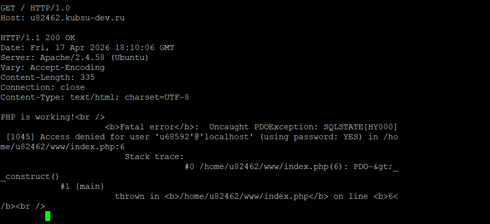
Запрос: GET /bmw/index.php HTTP/1.1, Connection: close.
Ответ: HTTP/1.1 404 Not Found (но скрипт отрабатывает), в теле — Array ( ) и строка "Привет, мир!".
Важно: заголовок Content-Type: text/html; charset=UTF-8 — отсюда узнаём кодировку (UTF-8)
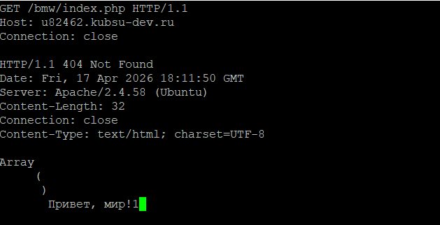
Метод HEAD позволяет получить метаданные без тела. Запрос: HEAD /bmw/file.tar.gz HTTP/1.1. Ответ: 200 OK, заголовок Content-Length: 11335. Размер файла — 11 335 байт
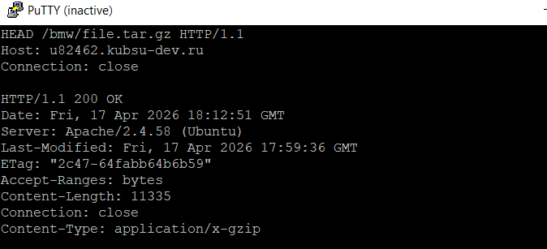
Запрос: HEAD /bmw/image.png HTTP/1.1, корректный Host: u82462.kubsu-dev.ru.
Ответ сервера: HTTP/1.1 200 OK. В заголовках присутствует Content-Type: image/png. Это и есть медиатип (MIME-тип) ресурса. Также виден Content-Length: 10506 и Last-Modified
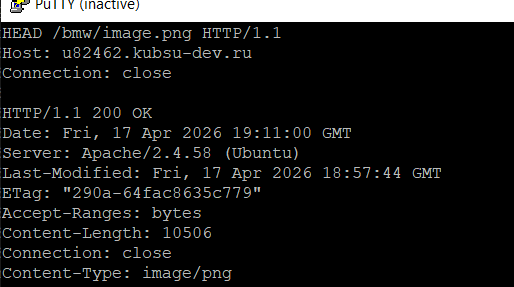
Запрос: POST /bmw/index.php HTTP/1.1
Заголовки: Content-Type: application/x-www-form-urlencoded, Content-Length: 14
Тело: comment=Hello
Ответ: сервер вернул Array ( [comment] => Hello ) и "Привет, мир!". Это доказывает, что PHP-скрипт принял POST-данные.
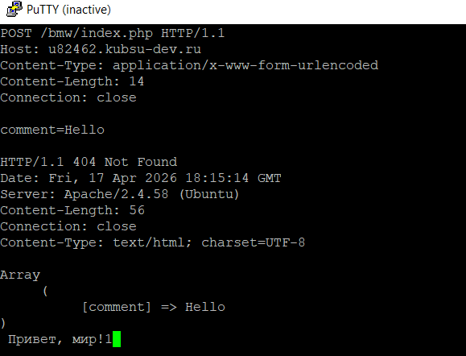
Запрос: GET /bmw/file.tar.gz HTTP/1.1 с заголовком Range: bytes=0-99. Ответ: 206 Partial Content (частичное содержимое). Заголовок Content-Range: bytes 0-99/11335 и Content-Length: 100. В теле — первые 100 байт архива.
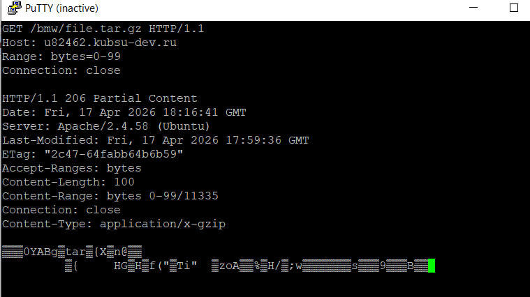
Запрос: HEAD /bmw/index.php HTTP/1.1. В ответе сервер возвращает заголовок Content-Type: text/html; charset=UTF-8. Значит, кодировка — UTF-8.
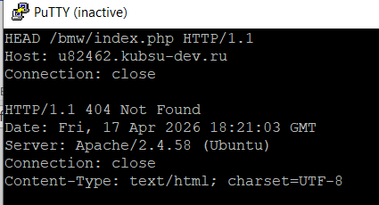
После добавления всех скриншотов (0..PNG, 1..PNG, … 9.PNG) и index.html в репозиторий, на сервере выполнены команды:
cd web2 && git pull → загружены 11 новых файлов. Затем cp -r ~/web2/* ~/www/bmw/ → синхронизация с рабочей директорией домена.
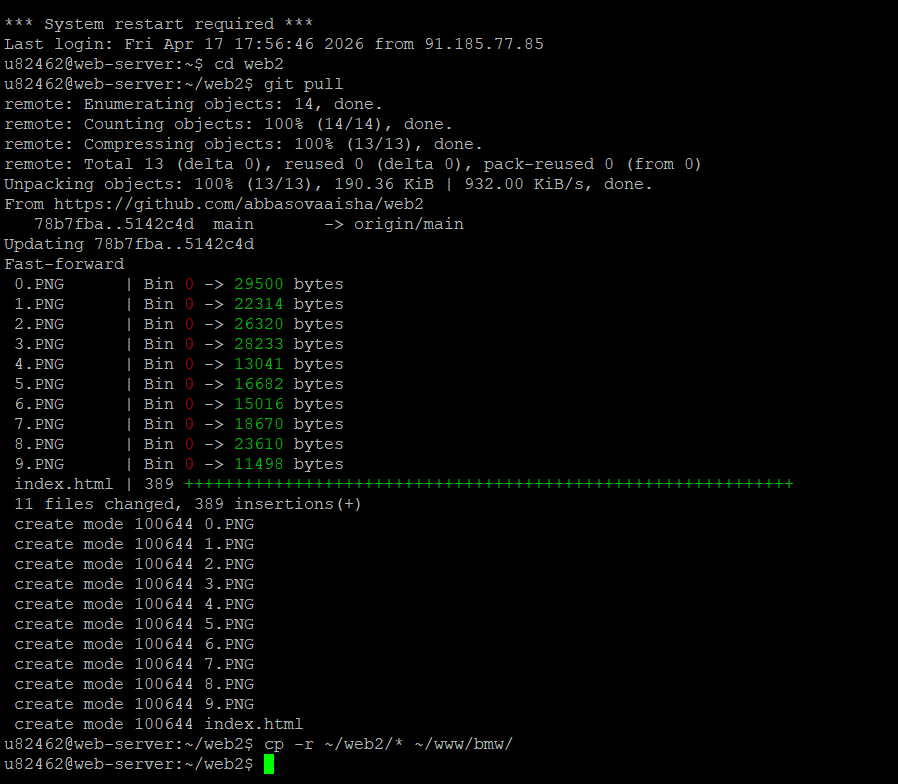